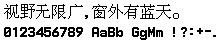

字样资料 / Samsung SGH-R208
三星 R208 · 16×16
已核15,645个非空汉字，含全部6,763个GB2312汉字和部分繁体；95个同固件ASCII。仅另导出已核U+3002与U+FF0C符号映射，不声称7,445个GB2312字符全覆盖。 · 16×16 · 简体、繁体
放大观察 · 3×

原尺寸 · 1×
来源与字样信息
- 家族
- Samsung SGH-R208
- 排版说明
- 两行固定样图224×44：中文184px、ASCII216px；外边4px、行间4px，不额外插字间距，不裁源字框、不缩放、不平滑。原机整体advance与基线未完整核定；BDF采用单独声明的上对齐存储框约定。
- 字符框
- 16×16 px
- 字符范围
- 简体、繁体
- 样本文字
- 视野无限广，窗外有蓝天。
- 拉丁样文
- 0123456789 AaBb GgMm !?:+-.
- 覆盖说明
- 已核15,645个非空汉字，含全部6,763个GB2312汉字和部分繁体；95个同固件ASCII。仅另导出已核U+3002与U+FF0C符号映射，不声称7,445个GB2312字符全覆盖。
- 缺字
- 样文无缺字
- 样张类型
- 原生16×16中文与同固件8×16 ASCII；全角逗号码位依原renderer映射为8宽逗号。
- 风格
- 未分类
- 用途
- 设备界面
- 字形来源
- SGH-R208/R20ZCVI1固件，内嵌构建日期2002-09-06。只读静态解析AXF与OGM，不执行固件或刷机程序；不是本次实机转储，样图不是手机截图。原生位图存储已确认，最初字体作者、制作方式与手工设计历史未独立证实。
- 授权状态
- 未确认开放再分发授权
- 许可说明
- Samsung／第三方固件与字模未查到开放再分发或商用许可，公开存档不等于授权。仅展示固定样图与无字模离线提取方法；不公开AXF、OGM、完整BDF或字模数组。
- 说明
- OGM排序Unicode表有15,646槽；末尾U+9FA6是空fallback，排除后为15,645个非空汉字。两页按列低位在上存储；U+3002取原16×16槽。AXF的已核UTF-8渲染路径选择Western index 4，并将U+FF0C映至同源ASCII逗号8×16，未造16px留白；其他UI上下文可能使用不同字体。完整同Unicode比较最高为Beijing16的803/6763字裁边相同；不从低精确重合率推断原创或授权。
- 获取方式
自行取得并确认有权处理固定SHA的R20ZCVI1.axf与R20ZCVI1.ogm，使用纯Python标准库脚本离线读取。默认只生成固定PNG与聚合报告；--export-bdf仅供具备使用权时本地导出15742项。无联网、固件执行、字模内嵌或覆盖输出。
- 来源
- Samsung SGH-R系列第三方固件存档资料页
- 原生证据
说明：固定AXF/OGM的长度与SHA；独立逐位源像素及原字节重打包、15742项BDF内存回读、固定PNG逐像素核对；短Thumb路径核对index4及逗号8宽映射。
source_sha256：a7f2e4bd228b31937eb0ad47170592a1ec21b35801ae2086c00e9be686dab629
axfSha256：4c8d54f97d2c05f34b8cf9995fad1a4ba75fbb942c8dd8b49602fb70e931d521
sourceGlyphSlots：15646
nonblankHan：15645
gb2312Han：6763
printableAscii：95
exportedGlyphs：15742
westernFontIndex：4
asciiStorageWidth：8
commaWidth：8
blankFallbackExcluded：U+9FA6
runtimeAdvance：
runtimeBaseline：
embeddedFirmwareDate：2002-09-06
查看原生设计来源
字体使用与再分发按原来源许可执行。